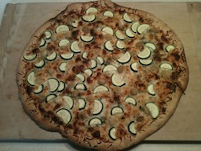

The Ridiculously Thorough Guide to Making Your Own Pizza
A Guide for the Pizza Amateur
There are a few "secrets of the trade" in making
your own pizza; once you know them, it is not hard to
make your own and it takes very little time.
In fact, after you make it a few times you'll wonder
why I made such a big deal out of it.
The instructions below are for making a pizza
in the traditional American pizzeria style. The intended audience for this guide
is the amateur home cook with little to no experience making pizza and possibly no
equipment to do so.
You will need a
large, flat surface
that you can get messy, and you will
need a large (large!) bowl. Also, you
will
make
a mess the first few times you do this.
Making pizza is much easier with a
pizza paddle.
With a paddle, you can get your
pizza in and out of the oven easily without burning yourself or losing your pizza. Also,
it makes the job of putting a topped, raw pizza onto a pizza stone much easier.
With my pizzas, I prefer to use a
pizza screen
.
There is no question that a pizza cooked on a stone comes out lighter, springier, and
with a generally better crust.
The reason I prefer a screen is that pizza stones are not amateur-friendly. Here's why:
A screen won't shatter if I drop it on the floor
or heat it improperly, like a pizza stone.
When I accidentally get certain foods on a stone - such as pepperoni - the stone will smoke and
smell bad every time I use it again.
It is tough to master the maneuver necessary for getting a topped, raw pizza off
of a paddle and onto a stone. The first few times I did it, I ended up flinging toppings all over
the place and stretching out the dough on accident.
A "good screen" is an order of magnitude cheaper than a "good stone." Of course, I
could use unglazed ceramic tiles (which are cheap), but because they don't come in
a size big enough for a good pizza, I'd have to put a few of them together. That's a
bad situation because they tend to move around when I try to put a topped pizza
on them.
With the
pizza dough
recipe that I use, nothing sticks to the screen (as long as I
don't have any big holes in my dough).
I actually have a stone and I use it at home on occasion. I would not
recommend a stone to somebody when they are making a pizza for the first time
and they had never used a stone before. If that sounds like you, consider buying a pizza screen.
Make the dough
Making the dough is complicated enough that it deserves its own page. See
How to Make Pizza Dough,
which has
detailed instructions on how to make the pizza dough. This step
will take between 15 to 30 minutes.
Prepare toppings while the dough rises

Roasted garlic, zucchini, and parsley butter on wheat crust
At this point, you should use the dough rising time to
slice, dice, and pre-cook any ingredients that you are going to
put on the pizza. It is important that you pre-cook any meats
that would not be safe to eat raw before you put them on a pizza. These
meats include (but are not limited to) beef, sausage, chicken, and pork.
This is also a good time to cook any tough vegetables, such as
asparagus, broccoli, cauliflower, or eggplant. Basically, get everything
ready to go so that when you have the crust shaped out, you can just slap
it on and throw it in the oven.
Shape dough into pizza
This is the part that requires the most practice. The process can be
broken down into a few steps, though they are not quite linear, unforutnately.
Still, you should try them in the order below, and go to a
previous or later step if required.
The basic goal here is to form the dough into a flat circle (or square) that
is about the same size as your cooking vessel.
Dust your working surface with a thin layer of flour or
corn meal (corn meal is best). You may need to dust again if
your dough sticks to the surface in the following steps.
Grab a chilled dough ball and smash it out evenly with your palms
(I use one on top of another, with my body weight behind them) to
make the ball about twice the diameter it was.
Pick up the dough and hold it between the palm
and fingers of your preferred hand, letting the rest of the dough
dangle and stretch down. Now smash the edge of the dough with
that hand while you gently pull the dough counter-clockwise
with the other. Rotate the dough clockwise and repeat. One
step of this process should take you about a second.
Once you have rotated the entire ball in your hands twice or three times,
the ball should look like a small flying saucer - flat on the edges,
and a little more spherical towards the middle. Place
the dough on your surface and smash it down with your palms (one on top
of the other) until you have a more uniform shape.
At this
point, you need to stretch out the dough evenly into a larger size.
You may need to add more flour or corn meal to your surface, because it is important that the dough
moves without any friction. Place your palms a few inches apart on the top half of the dough about
halfway between the center and the edge. Start rotating the dough on your surface, pulling with
your palms in opposite directions. Make sure you pull gently; however, if you pull a hole
in the dough, don't panic - just grab one side of the tear and pull it on top of the other, then
smash it to "glue" the pieces together. After you make one pull, rotate the dough clockwise
about 1/8 turn and repeat. Make sure that you don't concentrate on one area too much -
stretch both the middle and edge out evenly; however, only work on the top half of the dough.
You can continue to shape the dough into the right size through the
method immediately above, or you can be adventurous and try to
toss the dough.
Tossing the dough is a quick way to stretch out the dough, using the inertial force
of the spinning dough (sometimes referred to as centrifugal force) to stretch itself
while it spins above you. Tossing is a bit tricky, though, and can end in disaster
in two ways:
Huge hole forms in the dough because you spin it too hard or
you puncture it when catching it (not so bad)
You don't catch the dough, and it lands somewhere gross, like the floor (BAD)
Needless to say, tossing takes practice. This is not to say that you won't pick it up
on the first try - some people just have a knack for this. I've attempted to describe how
I do it below. Please remember, though, that the basic idea is to spin the dough up in the air,
and that you may find a better way to do it yourself.
Hold the dough with the tips of the fingers of your left hand and
the palm and fingertips of your right hand (or vice-versa if left-handed),
in such a way that most of the dough spills over
between you and your hands.
You will spin the dough counter-clockwise if you are right handed; clockwise
if you are left-handed. Before you toss, reverse spin about 1/4 turn - then gently but
quickly spin the dough and toss it up in the air simultaneously. Catch the
dough with as much "hand real estate" as possible - I go to the length of using my forearm -
to avoid puncturing it.
Repeat as necessary until the dough has stretched to the desired diameter.
Top it and cook it
Before you top your pizza, make sure that you have placed
the dough on top of the screen
or stone. You'll never get it on if you put toppings on first! Even if you
have preheated your stone, you should take it out of the oven and put the dough on top before you top
it. [Note: if you happen to have one of those huge pizza paddles, you can top the dough on your counter top
and then slide it on the stone afterwards - just make sure you have plenty of cornmeal underneath the crust
first. Be careful about throwing toppings into your oven, though.]
Now is a great time to preheat the oven - I usually crank it up to the highest temperature
before "broil", which on my oven is 500F. I've found that it takes
about 20 minutes for the oven to preheat to that temperature.
This step is, by far, the one most rife with pizza pitfalls.
We are cooking fast, and we are cooking at a high temperature - this
means that there are two things to worry about: uneven cooking and
burning.
Avoid uneven cooking
Spread your toppings evenly over the surface of
the pizza, avoiding any "mountains." Avoid piling up toppings
in the center - pizza rookies
tend to make this mistake, with disastrously undercooked
results! Don't be afraid
to push the toppings as close to the edge of the crust
as possible.
As mentioned before, pre-cook any ingredients
that may not be cooked thoroughly in 10 or so minutes
of 500F heat. This includes raw sausage, chicken, thick cuts of
certain vegetables (such as eggplant), and beef. Some
people also prefer to pre-cook onions that have
been cut in thick chunks.
Every 3 to 4 minutes, check on your pizza by peeking through
the window (but avoid opening the oven door so the oven doesn't
lose heat). If one side
of the edge of the crust is browning, and another is not,
this is a sure sign of uneven heat in your oven - twist the
dough 1/2 turn.
Don't put too many toppings on your pizza. If the height of your pizza
reaches more than an inch or so, you've probably got too much stuff
on it, and the toppings buried way down on the bottom (not to mention
the cheese) may not heat up.
Avoid burning
There are certain ingredients that must be
underneath cheese or other
ingredients
if you don't like them black and crispy:
Spinach (GROSS when burned!)
Fresh basil leaves (also gross if burned)
Ham, Canadian bacon, prosciutto
Pepperoni, salami (though some like
them burned or crispy)
Minced or chopped garlic
Use a cheese or blend of cheeses with low moisture.
Avoid cheeses with a low melting point (such as
cheddar, American, and Monterrey Jack) and
absolutely
do not touch your pizza with Velveeta
.
Mozzarella and
provolone are always good on pizza.
After you
add your toppings, slide the pizza into your oven, and enjoy the wonderful smell
that will emanate from your kitchen.
When your pizza appears to be done (for me, this usually means that the cheese on top has
browned and the crust is nearly burned), take it out of the oven and place
it somewhere safe, like a stove burner or wooden cutting board, to cool down. Let it cool down at least a few minutes
before you cut it. All in all, a pizza should cook in about
10
minutes
.
Again, use your
judgment and taste to decide when it is done; however, if it takes considerably
longer than 10 minutes, you probably need to turn up the temperature on the oven.
Cut it and eat it!
Some people prefer to use a pizza-cutter (one of those circular blades with a handle) to
cut pizza; I find that one can rarely put the right amount of force behind the blade
of a pizza-cutter. I prefer to use a large chef knife (as in an 10" knife) to cut
my pizzas at home. In restaurants, I have seen all kinds of great gadgets to cut pizza - the best
is the
pizza
rocker knife
.
It might be a little over-the-top if you are not an avid pizza maker,
but let me tell you - if you ever have to cut more than 3 pizzas at once, you'll thank
me for this baby. Even if you cut just one, you'll understand the value of this clever
knife.
If you do plan to use a pizza-cutter,
you should try to use the "lift and cut" method. In
other words, don't just drag the cutter over the pizza - you'll end up taking all of the
toppings with it off the edge of the pizza! You should firmly push the cutter down on the crust, move
it back and forth about an inch, and repeat until you have cut the entire pizza.
After cutting the pizza, you can sprinkle some Parmesan or Romano cheese and
a little chopped parsley on top. Finally, enjoy your beautiful and tasty pizza!